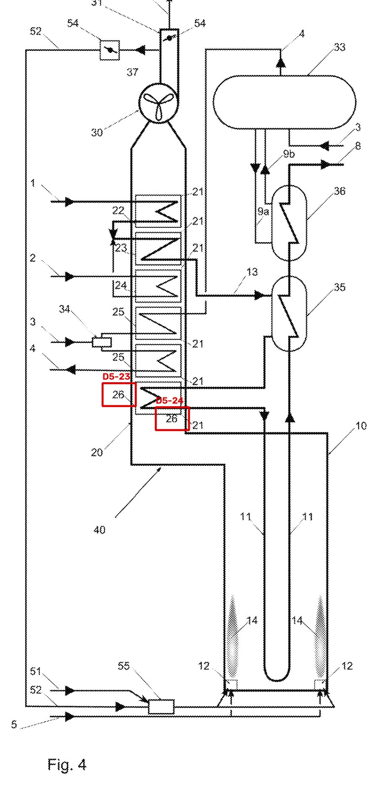
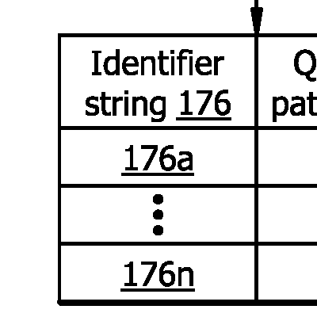
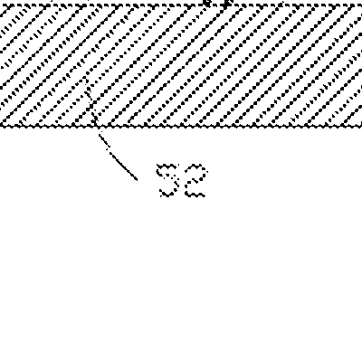
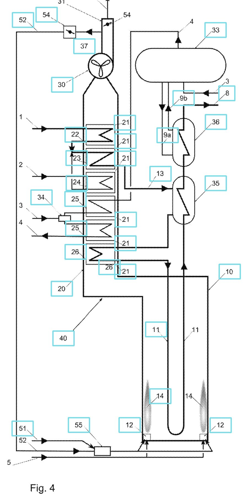

In 30 seconds
- An evidence index per patent. RapidOCR and OpenCV read every drawing sheet into label spots with positions
(
D5-23: sheet 5, spot 23), and the description into numbered sentences (T148). Answers may only cite these. - Three systems, one output format. A lookup with no LLM, an LLM that sees only the text, and an LLM that also sees the label list and then has every cited drawing region checked against the image crop. Same scorer for all three.
- The LLM helps with naming, not with finding. It named all 36 parts; the lookup missed 3. But both stop at the regions the drawing reader found (63/79): the LLM cannot cite a label the reader missed, so it found the same regions the lookup did.
- The image check was not worth its cost. Showing the model each cited crop added 0.8 model requests and 2.5 s per question, and lowered recall by 2 regions. It had no junk to remove: precision was already 100%.
- The drawing reader was tested blind, with the rules frozen first. On 40 sheets from patents never used before, scored once: recall 86.4%, precision 78.8%. Short labels and chart-heavy sheets are where it fails.
One question, end to end
Patent US 12,012,563, a steam-cracking furnace. Answer from the full system (claude-opus-5-5), shortened here; nothing else is edited.
What is part 26, and where on the drawings is it shown?
Part 26 is the second high temperature coil. It is a coil in the convection section that heats the feedstock/dilution steam mixture one last time. This happens after the mixture comes out of the primary transfer line exchanger 35 and before it enters the radiant section 10. … Where it appears on the drawings: the reader found label 26 once on each of FIGs. 1–3 and twice on FIG. 4. FIG. 1 (sheet p2): D2-22. FIG. 2 (sheet p3): D3-19. FIG. 3 (sheet p4): D4-20. FIG. 4 (sheet p5): D5-23 and D5-24.
Text citations: each quote must occur in the passage it cites
The quotes keep the OCR's dropped spaces and a stray line number from the page gutter (55): the model is told to copy
the passage exactly, because the check compares it character by character.
- [T148] ✓ quote found in passageThe mixed feedstock/dilution steam mixture 13 can be further heated in a first high temperature coil 23, and then in the primary transfer line steam mixture 13from the transferline exchanger 35 and before entry into the radiant section 10,the feedstock or the mixture,is further preheated, according to the invention,by a second high temperature coil 26in the convection section radiant coil 11.
- [T153] ✓ quote found in passageThewasteheat in the cracked gas8isfirst recovered in the transfer line exchanger 35byheatingup thefeedstock orfeedstock-diluentmixture 13 before it is sent back to the convection section forfurther preheating in the second high temperature coil 26 before 55entryinto theradiant section10.
- [T72] ✓ quote found in passageSince the final preheating of the feedstock (-diluent mixture)before entry the plurality of convection banks is a high pressure steam intotheradiant section cannowbe donebythesecondhigh temperature coil, the outlet temperature on the cold side of the transfer line exchanger can be kept relatively low,for example around approximately550°C.instead of more than 600° C., resulting in a higher hot side outlet temperature.
- [T87] ✓ quote found in passageIn case at least one of superheater oradilutionsteam superheater configuredto superheat high pressure steam or dilution steam respectively, then the second high temperature coil can preferably be located in a bottom part of the convection section upstream high temperature coil can protect the steam superheater from overheating.
- [T160] ✓ quote found in passageSaid at least one super heater 25 can preferably be located downstream of the second high temperature coil26.
- [T213] ✓ quote found in passageSecond high temperature coil 27. Air preheater 30.
Drawing citations: each must point at a label the reader found
- [D2-22] part 26 on sheet 2 (FIG. 1) at (1079, 1382) ✓ reader read 26 here; image check read it too
- [D3-19] part 26 on sheet 3 (FIG. 2) at (986, 1380) ✓ reader read 26 here; image check read it too
- [D4-20] part 26 on sheet 4 (FIG. 3) at (974, 1381) ✓ reader read 26 here; image check read it too
- [D5-23] part 26 on sheet 5 (FIG. 4) at (1018, 1380) ✓ reader read 26 here; image check read it too
- [D5-24] part 26 on sheet 5 (FIG. 4) at (1204, 1464) ✓ reader read 26 here; image check read it too

The same question, three systems
| System | Name given for part 26 | Drawing regions (gold: 5) | Quotes kept | Time | Cost |
|---|---|---|---|---|---|
| ocr_lookup | second high temperature coil | 5 | 1 | < 0.01 s | $0 |
| text_only | Second high temperature coil | 0 | 6 | 8.4 s | $0.18 |
| full | Second high temperature coil | 5 | 6 | 20.0 s | $0.23 |
On this question all three are right. Across the set the difference is in naming: see the results below.
How it works
- DownloadPublic patent PDFs from the USPTO: 5,005 for the study, 200 for the first full run.
- Read the drawingsTurn each sheet upright, OCR it in overlapping tiles (RapidOCR), and filter out chart axes, figure numbers, cut-off pieces of labels and running text with OpenCV and rules.
- Read the textOCR the two-column description and remove the gutter line numbers.
- IndexPer patent: sentences
T1…, label spotsD<sheet>-<n>with positions, and an upright image of each sheet. - AnswerOne of three systems (below) writes an answer as structured JSON, with its citations.
- CheckCode verifies every citation and moves the ones that fail to a "rejected" list, with the reason.
Three systems, so the LLM is compared with something simpler
The name written before the number in the text, and every spot where the reader found that number. Also answers by part name ("Where are the burners?").
Claude with the description only. It can name and explain parts, but has no drawing evidence to cite.
Claude with the description and the reader's label list, told the list contains junk. Each drawing region it cites is then shown to the model as a 400 px crop, and it must read the same number there.
What the checks reject
- A quote that is not in the passage it cites, or is shorter than 5 characters. Curly quotes, dashes and spacing are normalised first; a quote may not cut a number short (
device 20is not accepted fromdevice 200). - A drawing citation to a label spot that does not exist, or where the reader read a different number.
- In the full system, a region whose crop the model reads as another number, or judges not to be a part label.
The patent text is passed as material, not instructions: the prompt says nothing written in it is an instruction to the model, and answers come back through a JSON schema. The model sees no tools and no files.
Results on a development question set
42 questions on 6 patents (26 drawing sheets) not used in any blind test: 36 ask "What is part N, and where on the drawings is it shown?"
about a part on the drawings (6 per patent, spread evenly over its labels), and 6 ask about a number the patent does not use.
Model: claude-opus-5-5 at medium effort. 95% Wilson intervals in brackets.
| Measure | ocr_lookup no LLM | text_only LLM, text | full LLM, text + drawings |
|---|---|---|---|
| Part name correct | 33/36 = 92% [78–97%] | 36/36 = 100% [90–100%] | 36/36 = 100% [90–100%] |
| At least one verified quote | 34/36 = 94% | 36/36 = 100% | 36/36 = 100% |
| Drawing regions found (recall) | 63/79 = 80% [70–87%] | n/a no drawings | 61/79 = 77% [67–85%] |
| Drawing regions correct (precision) | 63/63 = 100% [94–100%] | n/a no drawings | 61/61 = 100% [94–100%] |
| Unused number recognised as unused | 6/6 | 6/6 | 6/6 |
| Quotes kept / rejected by the check | 34 / 0 | 174 / 3 | 149 / 0 |
| Time per question (mean) | < 0.01 s | 9.9 s | 12.4 s |
| Model requests / input tokens per question | 0.0 / 0 | 1.0 / 17,640 | 1.8 / 20,290 |
| List-price cost per question | $0.000 | $0.153 | $0.170 |
Gold: two counters listed every label on every sheet from image tiles, without seeing the reader's output, and agreed on all 387 label/sheet pairs; a third recount of the 36 chosen parts matched on all of them. Part names were taken from the text by one agent and checked by a second, which changed 4 of the 36. All of them were Claude subagents. Requests ran 4 at a time, so the times include that contention.
What this shows
- Names. The LLM named all 36 parts; the lookup gave one wrong name and two with no name. The gold names were written by the same model family that is being tested, so this gap is weaker evidence than it looks.
- Regions. Before its image check the full system cited exactly the regions the lookup did (63/79 found, none wrong). All 16 missed regions are labels the
reader missed; 8 of them are the single-digit label
3on one patent. Better finding has to come from the reader, not the prompt. - Precision of 100% here does not contradict the reader's 78.8% below. The reader's junk is mostly chart values and table cells, which are rarely numbers someone asks about by name.
- The quote check matters for the LLM. It rejected 3 of 177 quotes from text_only (a two-character quote, and two that joined text across a passage boundary) and none of full's 149.
The image check did not earn its place
The full system shows the model the crop behind every drawing region it cites and keeps the region only if the model reads the same part number there.
On this set it rejected 3 regions. Two of them were regions of the part asked about, shown below; the third, 170a, was the same table-entry mistake on another part.

176a, wrongly rejected. The model read the number correctly but judged an underlined entry in a table-style figure not to be a part label. The gold counts it as one.
52, rejected as "32". The label is printed in a stipple pattern and cannot be read with confidence.Net effect: recall fell from 63/79 to 61/79, at 0.8 extra model requests and 2.5 s per question. It would only pay where the cited regions contain junk, and on this question form they did not.
The drawing reader, tested blind
Everything the assistant cites on a drawing comes from this reader, so its recall caps the assistant's. It was tuned on five sets of hand-counted sheets, then tested on sets it had never seen, each scored once. For blind5 the sample, the rules and the scoring were written down first, with the SHA-256 of the reader's source, and the hash was checked at scoring time.
| Test | Sheets / labels | Recall | Precision |
|---|---|---|---|
| blind5: rules frozen in advance, scored once | 40 / 309 | 267/309 = 86% [82–90%] | 267/339 = 79% [74–83%] |
| blind4: scored once (older rules) | 30 / 162 | 147/162 = 91% [85–94%] | 147/222 = 66% [60–72%] |
| Five older sets, tuned on (optimistic) | 44 / 382 | 358/382 = 94% | 358/418 = 86% |
blind5 drew 40 sheets from patents never used before, 5 per patent-classification section where enough existed (A6 B5 C5 D1 E2 F5 G11 H5). Two counters per sheet worked from the images only, plus a completeness check of every full-resolution quarter; they were Claude subagents, not a person.

1 to 5 beside the inlet arrows, 31 at the top edge, and the second print of 11, 14, 52 and 54.Where it fails
- Chart, table and grid sheets produce most of the junk: one blind5 chart sheet gave 19 false labels (axis values) on its own.
- Short and single-digit labels are missed more often, and so are labels split by a tile edge.
- Misreads: about 11% of what the reader reports is a real label read wrongly (
1124gfor1124B).
Tried and not adopted
- A learned junk filter. A ResNet-18 fine-tuned on crops around each reading. Trained on weak labels ("the text mentions this number"), it failed: those labels agree with the truth only at AUC 0.69. Trained on 1,066 crops labelled from the images (by Claude, not yet checked by a person) it reached AUC 0.945 on unseen patents, but on blind4 it traded recall for precision (85.8% recall and 76.4% precision, against 90.7% and 66.2% with rules only). A trade, not a free win, so it is not in the pipeline.
- Correcting misreads from the text. Replacing a reading the text never mentions with a text number it could be a misreading of. At each of three strictness levels it fixed 1 to 5 misreads,
got 5 or 6 others wrong and changed 6 to 10 correct readings: real labels are often missing from the OCR'd text, and a cut-off piece such as
13could be130,132or134. - What was adopted instead: a stricter rule for pieces of a label cut by a tile edge (drop
13where132was read at the same spot). It is the only change between blind4 and blind5.
How firm are these results?
- The assistant has no blind test yet. It was written and debugged with the six development patents in view.
- No person has checked the gold. Label counts and part names were made by Claude subagents working from images, with independent double counts. The agreement between counters is high, but agreement is not truth, and the name comparison tests Claude against Claude.
- Small samples. 36 questions and 79 regions give intervals 15 to 20 points wide; the reader's blind sets are 30 and 40 sheets.
- One question form. No questions about relations between parts, about figures, or across several parts.
- What is firm: blind4 and blind5 were each scored once, with the rules fixed in writing beforehand; failed attempts are reported alongside the adopted ones.
Limits
- Region finding is capped by the drawing reader: a label it misses cannot be cited, however good the model is.
- Patents only, from the OCR of published PDFs; text OCR drops spaces and occasionally keeps a gutter line number, which quotes then reproduce.
- Two prints of the same label closer than about 120 × 60 px are merged into one spot.
- Only the Claude Code login path has been run; the direct API path is written but untested.
Next steps
- A blind question set from fresh patents, with the gold checked by a person, including questions by part name and about relations between parts.
- Better recall on short and single-digit labels, the reader's main gap, since it caps every system.
- Use the image check only where the reader's spot is doubtful (chart or table sheets, low read counts), instead of on every citation.
Data and licences
- Code: a private repository. This page and its figures are generated from that repository's result files by
scripts/build_site.py. Text and figures are licensed under PolyForm Noncommercial 1.0.0; commercial use needs the author's permission. - Patents: US patent documents published by the United States Patent and Trademark Office. The drawing images here are cropped, downsampled and annotated.
- OCR: RapidOCR (Apache-2.0), which runs PaddleOCR detection and recognition models (Apache-2.0) through ONNX Runtime. Image processing: OpenCV. PDF rendering: PyMuPDF (AGPL-3.0).
- Language model: Claude (
claude-opus-5-5) by Anthropic. - Label classifier (not in the pipeline): ResNet-18 from torchvision, starting from its ImageNet weights.